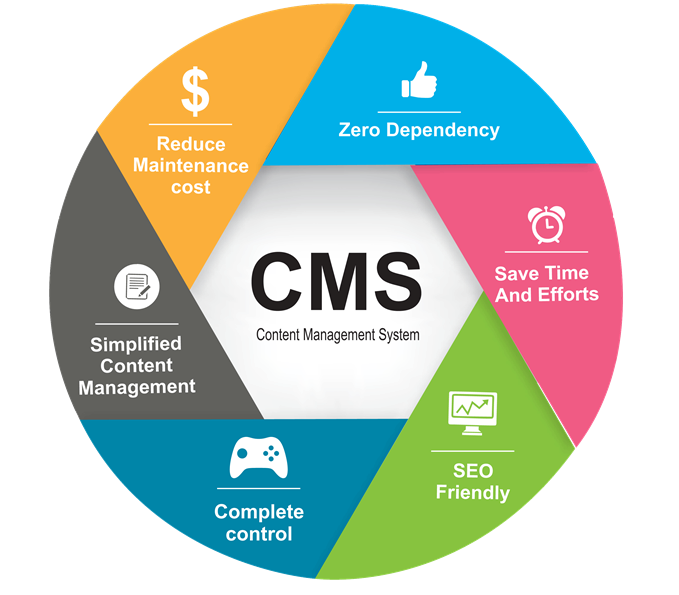

Typy webových aplikací
Vícevrstvé webové aplikace
Webová aplikace je aplikace poskytovaná uživatelům z webového serveru přes internet nebo jinou vnitropodnikovou sít’ (intranet). Díky pokročilým webovým technologiím je možné realizovat webovým prostředím stále složitější a komplexnější aplikace, včetně informačních systémů, cloudových služeb apod.
Současné webové aplikace jsou strukturovány do více vrstev, tradičně se uvádějí tři základní vrstvy:- Funkci prezentační vrstvy plní zpravidla webový prohlížeč.
- Logickou vrstvu představují technologie na dynamické generování webových stránek (PHP, ASP.NET, JSP apod.), jež se nejčastěji zpracovávají na straně webového serveru.
- Datovou vrstvu mohou tvořit databáze umístěné na databázovém serveru, ale zdrojem dat mohou být také datové soubory nebo internetové služby.
Model-View-Controller
Architektura moderních webových aplikací velmi často vychází z návrhového vzoru (design pattern), označovaného zkratkou MVC (představuje první písmena slov model, view, controller). Základní myšlenkou MVC architektury je oddělení aplikační logiky od výstupu. Snaží se vyřešit problém tzv. "spaghetti" kódu, typickém zejména pro starší webové aplikace psané v jazyce PHP, kdy se jako špagety v jediném souboru proplétaly dlouhé části kódu, který řešil logické operace a zároveň i renderování výstupu. Udržování a rozšiřování takových aplikací je velmi náročné, obtížná je i týmová spolupráce.
V pojetí MVC je aplikace přehledně rozdělena na komponenty tří typů:- Modelobsahuje logiku aplikace, k níž můžeme zařadit výpočty, databázové dotazy, validace a podobně. Jeho úkolem je podle zadaných parametrů zpracovat určitá vstupní data a připravit z nich data výstupní. Nerozhoduje o tom, jak bude se výstupními daty nakonec naloženo, jak budou zformátována a vypsána; model je zcela oddělen od výstupu. V případě použití ORM (objektově-relační mapování), korespondují modely přímo s databázovými tabulkami a představují třídy (např. kniha, autor, vypujcka), jejichž atributy se shodují s poli daných tabulek a metody většinou provádějí požadované operace s daty. Pro programování bez ORM můžeme využít principu manažerů. Může tak mít např. modely UserManager či ArticleManager. Obsahují metody k výběru potřebných údajů z databáze, např. metodu k výběru přezdívky a informací o uživateli při vypsání jeho profilu.
- View (pohled) má na starost zobrazení výstupu dat, která mu byla předána. Může jít o pohled v podobě výpisu dat (sestavy), ale také o pohled s formulářem. Nejčastěji se k tvorbě pohledů používají tzv. šablonovací systémy, které umožňují do šablony, jejíž rámec tvoří HTML stránka, vkládat do symbolických bloků (často tvořených složenými závorkami) proměnné i různé příkazy (podmínky, cykly). Šablony se mohou vzájemně kombinovat a doplňovat - může např. existovat určitá výchozí šablona s layoutem stránek, kterou využívají a doplňují další šablony. Pohledy mohou obsahovat i minimální množství logiky, která je pro výpis nezbytná (např. kontrola, zda si uživatel vyplnil přezdívku před jejím vypsáním nebo cyklus s komentáři, které se vypisují).
- Controller zprostředkovává komunikaci mezi klientem, modelem a pohledem. Každá entita mívá svůj vlastní controller - UserController, ArticleController atd.
- Požadavek zpracuje nejprve router, který podle zadaných parametrů zajistí jeho přesměrování na správný router. V tomto případě bude volán ArticleController a budou mu předány parametry view a 5.
- Controller na základě parametrů provede příslušné akce: zavolá model, jehož úkolem je v databázi najít článek s id 5, a získaná data poté controller předá pohledu (view) s názvem detail.
- Data jsou vložena na určené místo v šabloně a pohled je vyrenderován.
Webová API
API (zkratka pro Application Programming Interface) označuje v informatice rozhraní pro programování aplikací. Jde o komplex procedur, funkcí, tříd či protokolů nějaké knihovny (ale třeba i jiného programu nebo jádra operačního systému), které může programátor využívat. API určuje, jakým způsobem jsou funkce knihovny volány ze zdrojového kódu programu. V programátorské praxi se můžeme setkat s celou řadou API - například s API operačních systémů (unixové systémy používají standard POSIX, OS od Microsoftu zase Windows API), grafickými API (OpenGL, DirectX, Vulkan) nebo s API databázových a informačních systémů.
API se nyní hojně využívá při vývoji mobilních i webových aplikací a tvorbě internetových stránek. Smyslem webových API je zajištění komunikace mezi dvěma platformami, které si vzájemně vyměňují data. Umožňují využívat již naprogramovaná řešení a integrovat je do vlastních webů. V praxi se s integrací aplikačního rozhraní setkáváme třeba na stránkách zobrazujících polohu obchodu na Google mapách. V takovém případě je využito API z Google Map, které volají vrstvu kódu, jež zobrazuje požadovaná data.
API jsou využívána také čtečkami zpráv (RSS), kde umožňují výpis článků, nebo při přihlášení na webu a v mobilní aplikaci pomocí externího účtu (Facebook, LinkedIn atd.). Stejně tak umožňují přidávání komentářů například na sociální sítě. API může být součástí účetního software a díky tomu lze automaticky vygenerovat fakturu při nákupu z e-shopu a zapsat ji do databáze v účetnictví.
Další populární webová API:- YouTube API – umožňují vývojářům integrovat videa a další funkcionalitu této populární multimediální platformy. Rozhraní lze tedy využít například pro zobrazení streamů na webu nebo pro vložení playlistu.
- Flickr API – nabízí přístup k databázi této populární sociální sítě na sdílení fotografií.
- Twitter API – pro sdílení tweetů nebo využití dat z vyhledávání.
- Amazon API – umožňují na webu zobrazovat produkty nabízené na stránkách Amazonu. Mohou tak být využity jako prostředek pro zpeněžení (monetizaci) stránek.
Django framework
Django je open source webový aplikační framework napsaný v Pythonu. Hlavní úkol Djanga je snadné vytvoření komplexních, databází řízených webových aplikací. Zaměřuje se na znovupoužitelnost, propojitelnost komponent a rychlý vývoj v duchu „DRY“ (Don’t Repeat Yourself – "neopakuj sám sebe"). Django vychází z architektury MVC (Model-View-Controller), jež je v tomto případě modifikována do podoby MVT (Model-View-Template). Centrálním řídicím prvek aplikace je totiž systém zobrazení (View), který operace s daty řeší ve spolupráci s modelem a samotné zobrazení stránek zajišťují tzv. šablony (templates) s podporou šablonovacího systému. Datový model je definován pomocí tříd v Pythonu a prostřednictvím objektově relačního mapování (ORM) může být fyzicky realizován v různých relační databázových systémech. K specifickým rysům Djanga patří možnost automatické tvorby administrace projektu, která je generována dynamicky podle datového modelu.
Framework navíc nabízí:- Odlehčený, samostatný webový server pro vývoj a testování.
- Serializační a validační systém pro formuláře, který automaticky překládá data mezi formulářem HTML a hodnotami vyhovujícími databázi.
- Cachovací framework, který nabízí několik různých metod cachování.
- Podporu tříd, které mohou zasáhnout v různých stádiích vyřizování požadavku a provést vlastní funkce.
- Vnitřní komunikační systém pro komunikaci mezi komponentami pomocí předem dohodnutých signálů.
- Možnost překladu všech komponent do libovolného jazyku.
- Serializační systém, který může produkovat nebo číst reprezentaci XML a/nebo JSON instancí modelu Django.
- Systém rozšiřujících schopností šablonovacího enginu.
Fáze návrhu webové aplikace
- Strategie. Hledání kompromisu mezi potřebami uživatelů budoucí aplikace a zájmů tvůrců aplikace. Je třeba zjistit a pochopit cílovou skupinu uživatelů, jejich způsob uvažování a zvyky, zohlednit je v návrhu aplikace.
- Specifikace požadavků. Na základě získaných informací jsou specifikovány všechny funkce a možnosti, jež by měla aplikace a její GUI pokrývat. Výsledkem by měl být dokument s popisem požadovaných funkcí a forem obsahu.
- Návrh struktury. V této fázi se řeší tzv. interakční design; pomocí Use Case diagramů (případu užití) se zobrazují vazby mezi jednotlivými částmi aplikace a akce, které bude uživatel moci provádět, včetně možných reakcí aplikace.
- Základní model a kostra. V této fázi se řeší tzv. informační design (jak prezentovat informace generované aplikací, aby došlo k jejich správnému pochopení), interface design (výběru jednotlivých druhů GUI komponent k provedení určité činnosti) a design navigace (jak se budou v prostředí aplikace pohybovat uživatelé). Celkový pohled lze získat sdružením poznatků a vytvořit drátěný model uživatelského rozhraní - wireframe. Jeho cílem je určit hlavní části aplikace a ilustrovat jejich přibližné rozmístění (schématické obrázky, v nichž jsou potlačeny detaily vzhledu GUI komponent i obsahu).
- Vizuální vzhled. Webdesignéři připravují vizuální vzhled jednotlivých komponent stránky podle vytvořených wireframů a storyboardů. Na základě grafického manuálu vznikají barevná schémata, která budou v aplikaci použita, jsou vybírány typy písem a vytvářen graficky homogenní vzhled všech komponent.
- Testování. Může probíhat v uzavřené skupině i v testovacím provozu aplikace pomocí speciálních analytických nástrojů pro web (analýzy návštěvnosti, teplotní mapy, sledování pohybů myši a kliknutí, nahrávání uživatelské aktivity atd.).
Uživatelské rozhraní webu
Grafické uživatelské rozhraní (Graphical User Interface - GUI) je kombinací technologíí a prostředků, které umožnují uživateli komunikovat s počítačem a aplikací. V případě webových aplikací jde především o grafické či textové prvky a jejich rozmístění. GUI zásadním způsobem ovlivňuje vnímání celé aplikace uživateli a z orientace na uživatele vychází způsob navrhování aplikací označovaný jako User Experience Design (UXD). Kvalitní webová aplikace má být z pohledu jejího uživatele především funkční a použitelná, zároveň efektivní a dostatečně rychlá i při vykonávání jednotlivých dílčích úkonů a její rozhraní by mělo být dostatečně intuitivní a přizpůsobené zvykům uživatelů.
Responzivní design
Responzivní design je způsob stylování HTML dokumentu, které zaručí, že zobrazení stránky bude optimalizováno pro všechny druhy nejrůznějších zařízení (mobily, netbooky, tablety atd.). Díky vlastnosti Media Queries (součást CSS3), lze rozpoznat vlastnosti zařízení, na kterém je stránka prohlížena, a přizpůsobit její obsah i vzhled. Responzivní web design má tři základní úrovně:
- Flexibilní struktury se dosahuje pomocí procentních šířek. Jednotlivé šířky elementů tak nejsou zadávány v pixelech, nýbrž v procentech.
- Flexibilní obrázky se budou přizpůsobují možnostem zobrazení díky tomu, že se šířka a výška obrázku neuvádějí uvnitř tagu <img>. Aby nedocházelo k přetékání, nastylují se všechny obrázky: img{max-width: 100%; height: auto;}.
- Media Queries jsou pravidla, díky kterým lze měnit stylování dokumentu v závislosti na šířce obrazovky zobrazovaného zařízení. @media (max-width: 780px){...}
K urychlení a usnadnění práce webdesignerů byly vytvořeny některé responzivní frameworky, jakými jsou např. Bootstrap nebo Foundation. Po připojení potřebných souborů je možné aplikovat připravené styly pomocí pojmenovaných tříd.
Přístupnost webu
Přístupnost webových stránek (webové aplikace) znamená bezproblémového používání všemi skupinami uživatelů, včetně handicapovaných osob. Špatně navržené stránky či grafické rozhraní aplikace, které nerespektuje pravidla přístupnosti, může způsobit nedostupnost této služby pro lidi např. se zrakovým postižením (Blind Friendly Web), uživatele s pomalejším připojením, seniory, apod. Podle zákona musejí všechny weby státní správy projít auditem přístupnosti. Celosvětově uznávanou metodikou, která se zabývá auditem a přístupností internetových stránek, je WCAG, jejímž autorem je konsorcium W3C. Jednotlivé principy obsahují vždy několik pravidel a kritéria, rozdělená do třech úrovní: nejnižší úroveň je označována jako úroveň A, nejvyšší jako AAA.
Webové formuláře
Formuláře slouží k zadávání dat a jsou velmi častými prvky webových aplikací. Používají se k přihlašování uživatelů, pro vyhledávání, pro uživatelské komentáře, k vyplňování zákaznických údajů v e-shopech atd. Data mohou být z formuláře odeslána na server, kde jsou zpracována pomocí serverových skriptů (např. PHP) a uložena do databáze nebo souboru, odeslána mailem apod.
BĚŽNÉ PRVKY WEBOVÉHO FROMULÁŘE
- Základním elementem webového formuláře je značka <form>
<form action="skript.php" method="post">...</form>
- Atribut action obsahuje URL adresu skriptu, jemuž budou odeslána data z formuláře. Velmi často se může jednat o skript, který formulář zobrazuje (např. v případě, kdy atribut action neobsahuje žádnou hodnotu).
- Atribut method rozhoduje o způsobu odeslání dat. Výchozí metodou GET (nemusí být zadána) jsou data odeslána jako viditelná součást URL požadavku a jejich délka by neměla přesáhnout určitý počet znaků (obvykle kolem 2000). I proto se doporučuje využívat metodu POST, kdy jsou data posílána jako samostatný objekt, nezobrazují se v URL adrese a nejsou omezena velikostí.
- Běžný webový formulář je tvořen popisky (značka <label>) a formulářovými prvky k vyplňování
hodnot. Nejčastěji se setkáváme s elementem <input>:
<input type="text" size="20" name="jmeno" id="jmeno" placeholder="Zadej jméno" value="" tabindex="1">
Data vkládáná do prvku <input> mohou bý různá - podle atributu type:
| Typ | Použití |
|---|---|
| text | Vložení jednořádkového textu; atribut maxlength omezí délku textu |
| password | Pole pro heslo, místo znaků se zobrazí hvězdičky nebo kuličky |
| file | Pole pro upload souboru; značka <form> by v tomto případě měla obsahovat atribut enctype="multipart/form-data" |
| checkbox | Zaškrtávací políčko; atributem checked nastavíme zaškrtnutí |
| radio | Přepínač; skupinu přepínačů spojuje stejná hodnota atributu name |
| number | Číselný typ; pomocí atributů min a max lze udávat rozsah platnosti |
| date | Slouží k zadání data, není podporován všemi prohlížeči |
| image | Umožňuje vložit obrázek (atribut src), který funguje jako tlačítko |
| hidden | Skrytý prvek, který však může sloužit k přenášení dat (např. id) |
| submit | Zobrazí se odesílací tlačítko. Od HTML5 se používá prvek <button> |
| reset | Tlačítko, které znovunastaví výchozí hodnoty ve formuláři |
Validace formulářů
Tvůrce webové aplikace by měl vždy zajistit, aby hodnoty zadávané do formuláře byly vždy pečlivě zkontrolovány buď ještě před jejich odesláním na straně klienta (pomocí vhodných atributů HTML nebo JavaScriptu), v každém případě však na straně serveru.
Validací formulářových dat předcházíme možným bezpečnostním rizikům, které mohou způsobit pokusy záměrně vložit podvržená data a způsobit problémy aplikaci (např. Cross site scripting, SQL injection), nebo i nechtěná chybná zadání uživatelů, která mohou mít např. neblahý vliv na data ukládaná do databáze (porušení integrity).
Regulární výrazy
K validaci zadaných dat můžeme jak na straně klienta, tak i na straně serveru využít (mimo jiné) tzv. regulárních výrazů. Regulární výraz (regular expression) je speciální řetězec znaků, který představuje určitý vzor (masku) pro textové řetězce. Většina moderních programovacích jazyků používá Perl-compatible regulární výrazy, které mohou být sestaveny pomocí speciálních symbolů:
\^\d{3} ?\d{2}$\ (regulární výraz pro kontrolu PSČ)
Bezpečnostní rizika webových aplikací
{kind=link}
{kind=link}
{kind=link}
{kind=link}
{kind=link}
{kind=link}
Kvalitní webové aplikace by měly být ošetřeny proti celé řadě možných útoků:
Cross-site scripting
XSS je metoda narušení WWW stránek využitím bezpečnostních chyb ve skriptech (především neošetřené vstupy). Útočník díky těmto chybám v zabezpečení webové aplikace dokáže do stránek podstrčit svůj vlastní javascriptový kód, což může využít buď pouze k poškození vzhledu stránky, jejímu znefunkčnění, získávání citlivých údajů návštěvníků stránek nebo obcházení bezpečnostních prvků aplikace. Často je též využíván při phishingu tak, že je skrze XSS zranitelnosti uživateli ukázán jiný obsah na jinak důvěryhodné stránce.
Obrana:V textech zadávaných uživateli je třeba speciální znaky nahrazovat entitami, např. < nahrazovat za <, v java aplikacích nejlépe pomocí značky <c:out value="${hodnota}"/>. Dále je nutno kontrolovat URL od uživatele, která jdou do obrázků, odkazů a podobně, protože mohou začínat např. na javascript:. Kvůli různým variacím a budoucím změnám je vhodné použít pro tuto kontrolu whitelist.
Cross-site request forgery
XSRF je pasivní útok, kdy útočník nachystá na nějakou stránku kód, který způsobí vyvolání URL na nějakém jiném serveru, kde uživatel může být stále přihlášen.
Obrana:Důležité akce (třeba převod peněz) je třeba potvrzovat, do přihlašovacích formulářů je třeba přidávat náhodně generované hodnoty. V administrační části internetových aplikací, pro akce, které mažou určité záznamy nebo je jiným způsobem mění, se doporučuje zásadně používat HTTP metodu POST. Používat autorizační token – náhodně vygenerovaný řetězec pro danou akci a pro aktuálního uživatele.
Clickjacking
Cizí stránka, na kterou je veden útok, je zobrazena na útočníkově stránce v iframe tak, že je vidět jen část bez bližšího kontextu. (Je možné využít i opacity v CSS.) Uživatel je naveden ke kliknutí na tuto část stránky, čímž provede nějakou akci, například hlasování v anketě.
Obrana:Lze se bránit hlavičkou X-Frame-Options, která je v některých prohlížečích podporována, a Javascriptem. Princip spočívá v zabránění zobrazení stránky v rámci.
Session hijacking
Útok, při kterém útočník odposlechne cookie použité pro označení úspěšně autentizovaného uživatele, a začne se za něj vydávat
Obrana:Session cookies musí mít označení secure, tedy mohou být poslána jen přes šifrovaná SSL spojení. V případě předávání session ID přes URL je obrana komplikovanější, vyžaduje zabránit úniku URL přes referer (odkazy, obrázky, ...) a Session fixation.
Phishing
Phishing je aktivní útok, při kterém útočník vydává svoje vlastní webové stránky za stránky instituce, aby získal přihlašovací údaje uživatele.
Obrana:Vzdělávání uživatelů v kontrole autentizace serveru, použití Extended Validation SSL Certificates.
SQL injection
SQL Injection je technika napadení databázové vrstvy programu vsunutím (odtud „injection“) kódu přes neošetřený vstup a vykonání vlastního pozměněného SQL dotazu.
Obrana:Důsledné používání tzv. PreparedStatement a jeho setXXX() metod pro nastavování hodnot. Tam kde se nejedná o hodnotu (třeba název sloupce v ORDER BY), zkontrolovat vstup regulárním výrazem na očekávané hodnoty.
Redakční systémy a e-commerce
Redakční systémy - CMS
Zkratkou CMS (Content Management System = systémy pro správu obsahu) je označován software, pro který se vžil častěji používaný název redakční systém. Jedná se zpravidla o komplexní webovou aplikaci používanou pro tvorbu a úpravu obsahu webu bez znalostí kódování. CMS tak může ušetřit náklady na aktualizaci obsahu webu, protože změny částí stránek může provádět i zaškolená obsluha bez znalosti kódu HTML, CSS či dalších technologií.
Funkce redakčních systémů
V současnosti existuje celá řada redakčních systémů, které se vzájemně liší svými funkcemi i možnostmi použití. K předchůdcům CMS patří různá administrační rozhraní pro vkládání novinek a aktualit. Složitější CMS umožňují vkládání různých článků a spotů (včetně tabulek a obrázků) do předem určených kategorií, případně úpravu všech textů na webu. Používají se k tomu tzv. WYSIWYG editory, jejichž ovládání se velmi podobá ovládání běžných desktopových textových procesorů (např. MS Word), které fungují v internetových prohlížečích a v pozadí generují HTML kód. K nejčastěji používaným patří FCKEditor a TinyMCE; v obou případech jde o javascriptové aplikace na straně klienta, jejichž prostředí lze libovolně konfigurovat a funkčnost rozšiřovat pomocí řady pluginů. Častou funkcí CMS je i správa obrázků a celých fotogalerií, většina redakčních systémů obsahuje i moduly pro správu multimediálního obsahu, včetně audio a video souborů. Výjimkou není ani možnost spravovat diskuse a komentáře. Vyspělé CMS dokáží přímo manipulovat se strukturou webu a s využitím různých přídavných modulů přizpůsobovat funkce redakčního systému konečnému záměru - s jejich pomocí je tak možné vytvářet weblogy, firemní stránky, elektronické obchody, zpravodajské portály atd.
Populární redakční systémy
Mezi populární a velmi rozšířené CMS patří Wordpress, Joomla! a Drupal.
WordPress je open source redakční systém napsaný v jazyce PHP a využívající databázový systém MySQL. Původně byl vyvinut se záměrem poskytnout platformu pro co nejpohodlnější zprovoznění blogovacího systému, ale díky rozsáhlé komunitě programátorů a existenci mnoha rozšíření je dnes základem nejrůznějších webových projektů. Jednou z výhod Wordpressu je snadná instalace jádra systému, po níž může následovat instalace různých doplňků (pluginů) i šablon grafického vzhledu (témat).
Redakční systém je spravován prostřednictvím administrační části aplikace (back-end), do níž mají přístup uživatelé podle nadefinovaných oprávnění. V administraci lze měnit nastavení systému, instalovat i přizpůsobovat pluginy i témata, aktualizací, instalace a přizpůsobení témat), definovat strukturu webu (provádět změny menu, vytvářet kategorie i tzv. štítky), editovat a publikovat příspěvky (články v podobě aktualit) nebo statické stránky, vytvářet galerie obrázků i multimédií, sledovat statistiky přístupů a provádět řadu dalších operací. Wordpress kromě jiného podporuje využití RSS kanálů a metod Trackback i Pingback (způsoby jak informovat určitou stránku, že je na ni z jiné stránky odkazováno; bohužel rovněž časté nástroje spammerů).
Nevýhodou Wordpressu, ale i jiných rozšířených CMS je množství útoků, které využívají slabých míst těchto systémů k jejich ovládnutí, poškození nebo i zneužití k jiné kybernetické kriminalitě. Při nasazení jakéhokoliv redakčního systému je proto nezbytné důsledně dodržovat všechny bezpečnostní zásady, zejména pravidelně aktualizovat jádro systému, ale i pluginy.
E-commerce
Pojem e-commerce je používán k označení různých obchodních transakcí realizovaných prostřednictvím Internetu a dalších elektronických prostředků. Podle cílové skupiny rozlišujeme několik typů e-commerce:
- B-2-B (Business to Business, obchodník obchodníkovi). Většinou fungují na principu elektronické výměny dat (objednávek, faktur). Vyšším stupněm jsou internetová tržiště pro zprostředkování obchodů. Nejvyspělejší variantou jsou komunikační a distribuční sítě, kde dochází k transakcím v reálném čase, včetně finančních a logistických operací.
- B-2-C (Business to Consumer, obchodník zákazníkovi). Na základní úrovni je to webová stránka plnící funkci elektronického katalogu, doplněná případně o interaktivní formuláře s možností zpětné vazby. Nejvyšší úrovní je internetový obchod s možností online plateb.
- C-2-B (Consumer to Business, zákazník obchodníkovi). Obchodní transakci iniciuje zákazník, když zadává požadavek na určitý produkt za určitou cenu. Obchodní partner sdělí, zda je ochoten požadavek akceptovat (např. poptávka na pokoj v penzionu).
- C-2-C (Consumer to Consumer, zákazník zákazníkovi). Výměnný obchod mezi lidmi bez prostředníka - internetová spotřebitelská burza či elektronická aukce (např. použitého zboží, sběratelských předmětů apod.).